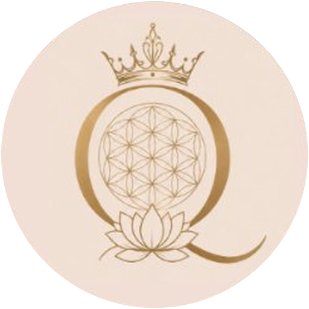

Our StoryJewellery with frequencies
In Chinese philosophy, Qi (气) is the vital energy that flows through every living thing. We believe the stones you wear should carry that energy too.
Our emblem
The crown speaks of self-worth, the flower of life of harmony and connection, and the lotus of growth through every season. Together they form the Q of House of Qi.
Natural, and honest about it
We work only with natural crystals and gemstones, and we love teaching what makes a stone real — from natural inclusions to the subtle colour shifts no dye can imitate.
Chosen with intention
Each piece is selected by hand for its clarity, colour and energy, so the bracelet or pendant you receive is truly one of a kind.